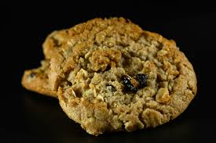

Oatmeal Raisin Cookies
Home

Description:
Soft and chewy with that trademark homemade flavor, these are the best soft and chewy oatmeal raisin cookies. Made with brown sugar, vanilla, cinnamon, chewy oats, sweet raisins, and a secret ingredient, this recipe wins for flavor and texture. Your family will love these easy oatmeal raisin cookies!
Ingredients
- 1 cup all-purpose flour
- 1/2 teaspoon ground cinnamon
- 1/2 teaspoon baking soda
- 1/4 teaspoon salt
- 1 and 1/2 cups (150 grams) old-fashioned rolled oats
- 1/2 cup (115 grams) unsalted butter (softened)
- 1/2 cup (100 grams) packed light or dark brown sugar (Substitute: For 1 cup brown sugar: 1 cup granulated sugar,1 tablespoon honey or maple syrup, adjustment: Reduce other liquid in the recipe by 1 tablespoon.)
- 1/4 cup (50 grams) granulated sugar
- 1 large egg (room temperature)
- 1 teaspoon pure vanilla extract
- 1 cup (150 grams) raisins
Steps:
In a large bowl, whisk together the flour, cinnamon, baking soda, and salt. Stir in the old-fashioned rolled oats and set aside.
In the bowl of a stand mixer fitted with the paddle attachment or in a large mixing bowl using a handheld mixer, beat the butter, brown sugar, and granulated sugar together for 1 to 2 minutes or until well combined. Add the egg and vanilla extract and mix until fully combined, stopping to scrape down the sides of the bowl as needed.
Add the dry ingredients and continue mixing on low speed until just combined, then mix in the raisins.
Cover the cookie dough tightly with plastic wrap and refrigerate for at least 30 minutes.
Preheat the oven to 350°F (180°C). Line two large baking sheets with parchment paper or silicone baking mats and set aside.
Once the dough is chilled, remove it from the refrigerator. Using a 1.5 tablespoon cookie scoop, scoop the cookie dough and drop onto the prepared baking sheets. Roll the cookie dough into balls and very gently press down with your hand to flatten each ball of cookie dough slightly. Make sure to leave a little room between each ball of cookie dough as they will spread a little while they bake.
Bake for 10 to 12 minutes or until the edges of the cookies are lightly golden brown and the tops are set. Remove from the oven and cool on the baking sheets for 5 minutes, then transfer the cookies to a wire rack to cool completely.